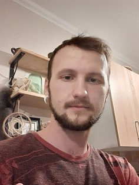

| Работа |
| Образование |
| Инфо |
|  |
Фастовец Александр 20.06.1992 Junior C# Разработчик г. Новосибирск Готов к переезду Работа в офисе предпочтительнее удалёнки. |
Контакты wardrayv@yandex.ru
|
|
Июль 2013 Июль 2014 |
Компания: ATI Helper Должность: IT Сервис менеджер
|
Октябрь 2014 По сей день |
Компания: ОАО Электросигнал Должность: Инженер-технолог
|
| 2017-2022 |
Сибирский государственный университет телекоммуникаций и информатики, Новосибирск ИВТ, Программист |
Доп. Курсы: SkillBox QA Тестировщик (Приостановлено) |
|
О себе: Переехал в Новосибирск в 2014 году, устроился на завод, проработав год призвали в армию. Как вернулся поступил в СибГУТИ на программиста, начал изучать темы, которые окружают эту специальность и IT в общем. Интересуюсь ПК железом и влиянием информационных технологий на общество, стараюсь быть в курсе новинок. Помимо хард скиллов, провожу время над улучшением софт скиллов, например: помогая своим одногрупникам усвоить некоторые темы, которые смог усвоить сам. |
Скиллы Ссылка на портфолио #https://github.com/WaRDrayv/Portfolio |